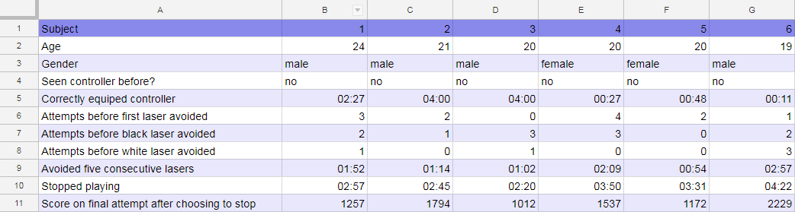

Task Anaylsis
With the data gathered I have transferred them into a spreadsheet here. Click the image to zoom in.

×

Before going into detail on my analysis I would like to point out that for row five "Correctly equipped controller" where the controller was never correctly equipped during the test
I have marked it as 4:00 for the sake of graphing the numbers.
Data Analysis
Here we shall go through some of the trends I have been able to find in the data and my thoughts and reasonings behind why they exist. Along with where appropriate
solutions to problems that may be causing issues.
Controller Use VS Time Played
The above graph depicts the time it took for players to correctly equip the controller leading into the time at which they decided to stop playing.
there is an obvious trend here where, although not majorly different, players who quickly learnt how to use the controller in the correct manner decided to spend more time playing the game.
It's possible to take from this that using the controller correctly added to the enjoyment of the game urging the subjects to try it a couple more times before stopping.
However, the fact that one third of the subjects never equipped the controller correctly at all, goes to show that it is not of an intuitive enough design to be
used without instruction. For the controller to prompt people to use it correctly it would either need a redesign into something with more obvious affordances. Or to be given instructions
on the controller itself.
Black and White Lasers
Due to the fact the black and white lasers don't have an obvious colour match against the controller unlike the other four colours, I was curious to see how easily the subjects
pick up the idea of how to block these beams. Below I have compared the number of attempts needed before the user managed to block each. For reference, to block the black laser all
light sensors must be covered, and to block the white one you must make sure to not cover over any of the sensors.
Firstly, it should be noted that subject five didn't have the chance to block either of the two lasers. This was because the appearance of these lasers is randomly generated. This highlight's
a flaw in how this data was decided to be collected. In hindsight it would be better practice to fix the spawn times of the black and white lasers were this to be tested again.
With that said it is still possible to see from the comparisons above that generally it was quicker for people to pick up on how to block the white laser, with subject six being the only
one to block the black before the white. When reflecting on this I don't believe it is because the subjects understood the connection between the colours and how to block the white laser,
but more that the white laser requires no input, so when trying to work out what to do they would often accidently block the white while moving their fingers between the light sensors.
Overall, I consider two attempts before managing to block either of these lasers to be too much, it wasn't due to lack of skill but a lack of understanding on how, to remedy this in the future
a quick guide should be laid out before the game starts explaining these two lasers and how to go about blocking them. This will likely lead to more of an enjoyable gameplay experience.
Heuristic Evaluation
With the feedback from the heuristic evaluations I have used thematic analysis to pick out common trends across data, I will now examine these trends below. The feedback from the
three experts is available for download if you would like to look at all the data gathered.
Tutorial
| However, it is not at first obvious what the white and black beams represent. |
| A tutorial on what each light is would be helpful for new players. |
|---|
It was highlighted in the evaluations that it can at first be difficult to understand the way in which the black and white beams work.
This ties in with the data gathered from the task analysis and makes it clear that this is a major issue. The evaluation has also provided
advice on how to avoid this issue by implementing a tutorial to quickly take new players through how to block the light beams. This agrees
with my early thought that a tutorial could alleviate some of the frustration and allow for more enjoyable gameplay from the beginning.
Controller Ergonomics
| The ergonomics of the controller could be improved to fit your hand better. |
|---|
| controller ergonomics was improved to encourage sustained play |
|---|
| The controller requires an uncomfortable grip to be used as intended |
|---|
This feedback highlights an incredibly severe issue, if the controller is not seen as comfortable enough to be used for an extended period
then the end users may not be willing to come back to it after their first experience. The design of how the controller is held will have to be
re-evaluated and tested again to make sure it is of a comfortable nature for a wide variety of users.
The controller being uncomfortable could be seen as contradicting the earlier analysis
that those players who used the controller correctly decided to play for longer, however I see two possible reasons for this. Reason one being that
although it was uncomfortable the subjects still enjoyed the game more using the controller correctly, or reason two that the incorrect way the subject
decided to hold the controller was even more uncomfortable than the intended way.
Controller Inaccuracy
| unexpected behaviour due to the inaccuracy of the controller. |
|---|
| is not always accurate |
|---|
| somewhat limited by the inaccuracy of the controller |
|---|
The accuracy of the controller was only raised as an issue by one of the evaluators, but given the possible severity of this issue I feel it is
worth looking into. Considering why the evaluator found the controller inaccurate could well have been to do with the fact you are only able to block
one type of beam at a time, so if your fingers ever accidently cover another light sensor it might appear that the controller isn't working correctly.
A way to fix this might be to have an indicator on screen of which sensors are being blocked, this can take away the confusion of not knowing if
you are accidently blocking multiple sensors.
Another possible cause of the inaccuracy is that the light sensors even though being covered are still getting light through. A solution would be to
depress the sensors deeper into the controller as currently they stick out a bit meaning your finger must deal with potentially covering the sides.
Having the light sensors set in this manner was the original plan for the controller but due to miscalculation on the 3d model the light sensors didn't
fit correctly.
Scoreboard
| improved with the help of a scoreboard or a place to review the scores |
|---|
| score has nothing to judge it against so it’s difficult to know how well you did. |
|---|
I have highlighted the lack of scoreboard as a minor issue, but one with such a quickly implementable fix it should not be overlooked.
The inclusion of a scoreboard system has been noted to improve motivation to play and replayability. One could be easily added to the game, possibly
saving the scores on the controllers Arduino so that if you take your controller to a friends they can challenge your scoreboard.